Ministry Of Tourism

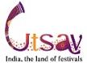
Ministry Of Tourism
Bihar Tourism is the initiative of the Ministry of Tourism, Bihar Government to promote and incentivise the tourism opportunities in the state. The fundamental activities of the department include developing the conditions and infrastructure to make the state conducive to travel and tourism. In addition, Bihar Tourism is also focussed on helping tourists find destinations, routes and experiences that are to their liking. Whether it is in the form of circuits that cover a specific set of spiritual, natural, or historical places, or different types of food and festivals, Bihar Tourism offers something for everyone. From helping tourists plan and book their travel and stay to ensuring they experience the beauty and culture of Bihar without missing anything from their itinerary, Bihar Tourism is a friend for all tourists of the state. Arrange your transportation and stays conveniently at every stop of your travel route with Bihar Tourism. Get relevant and reliable information about your destinations.
 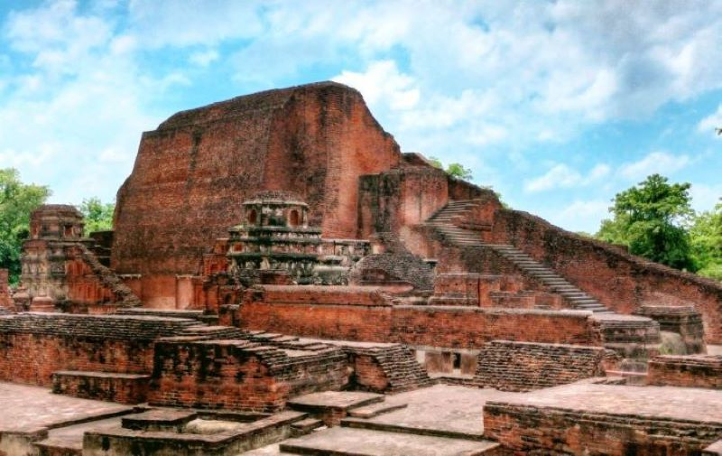
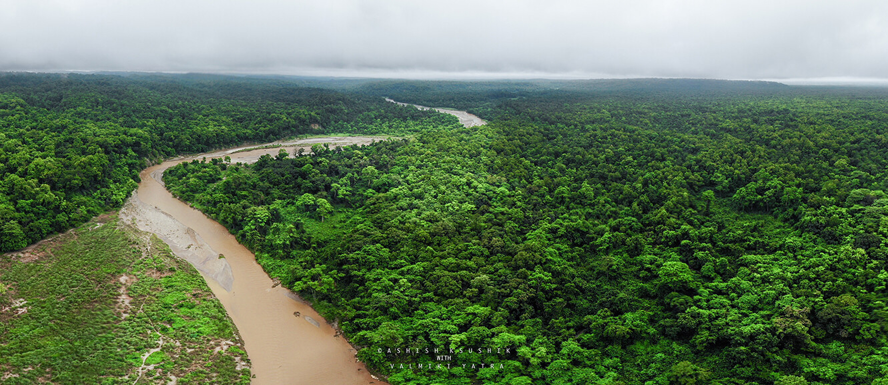
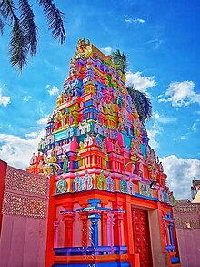
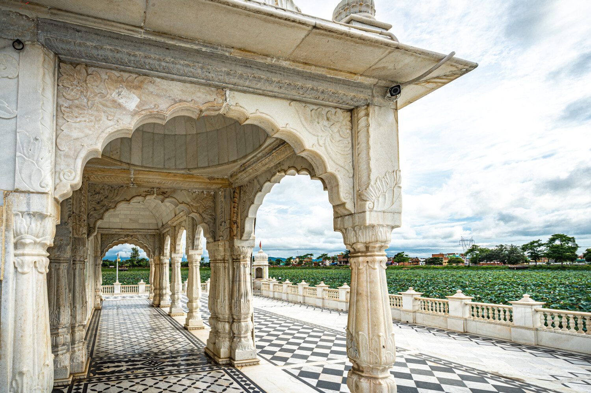
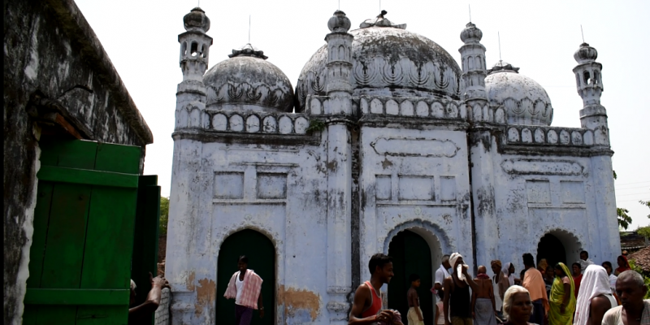
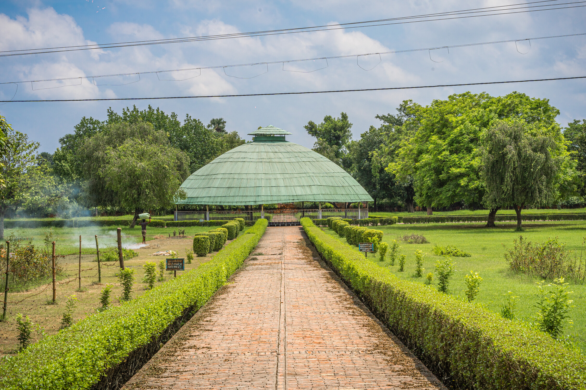
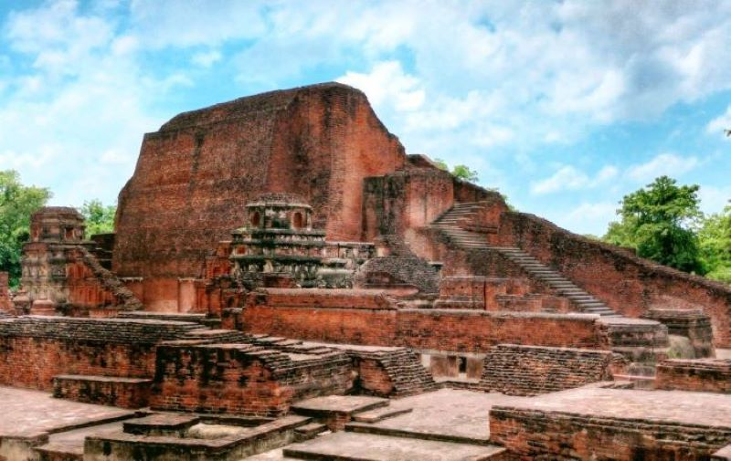
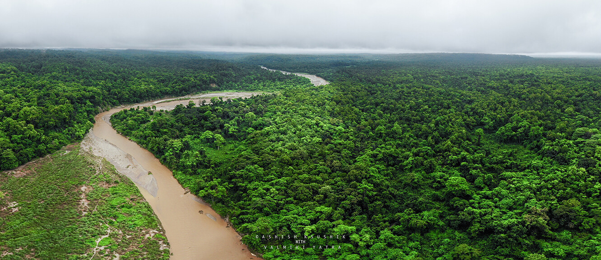
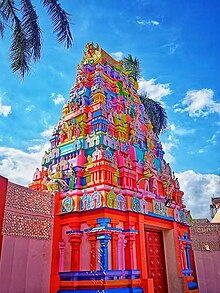
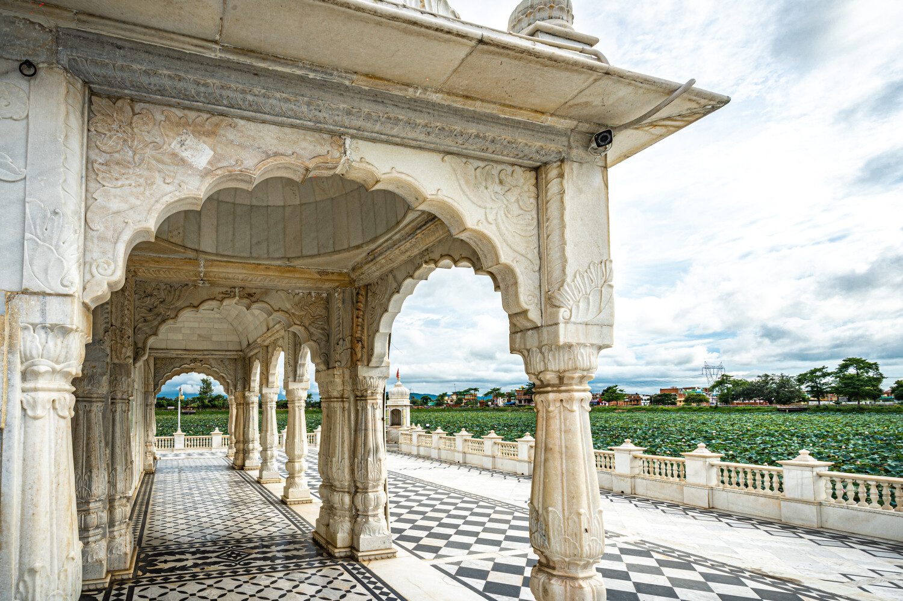
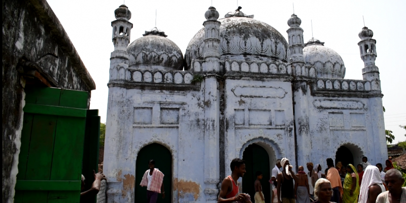
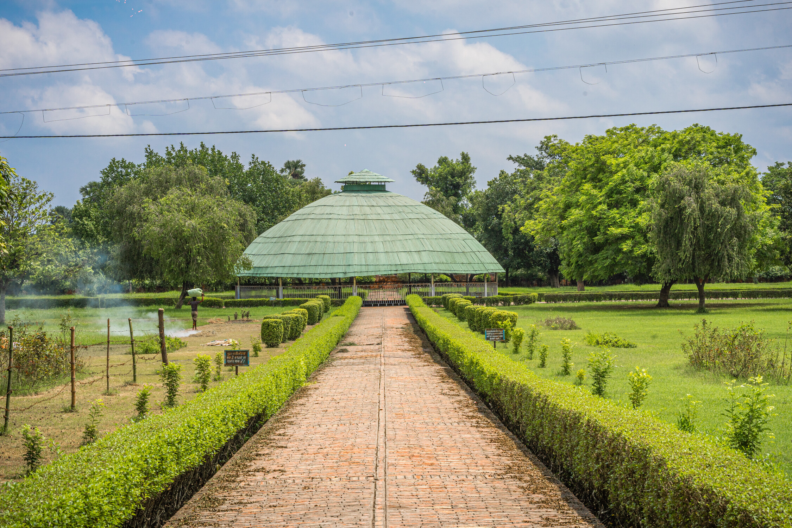